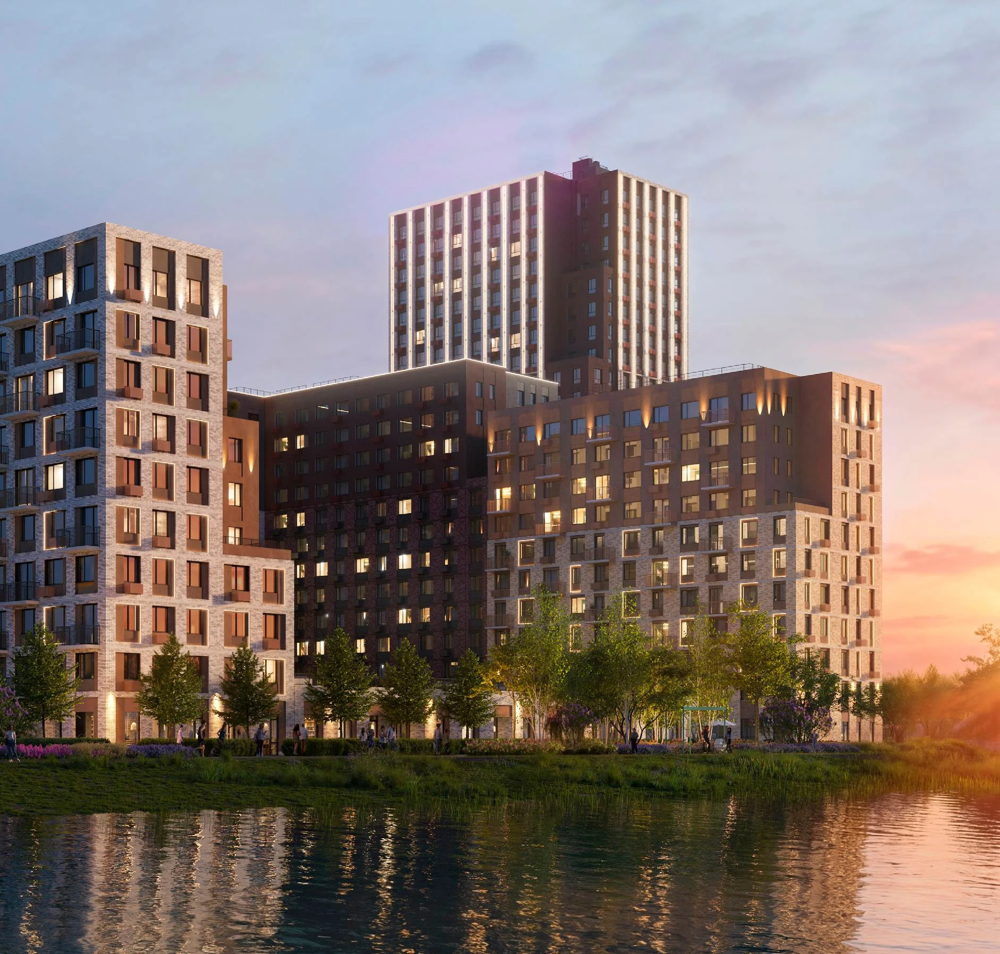
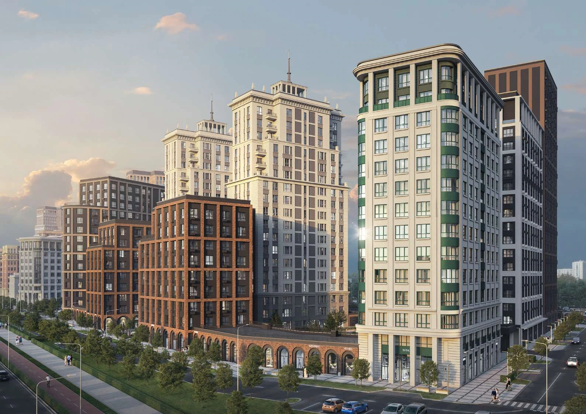
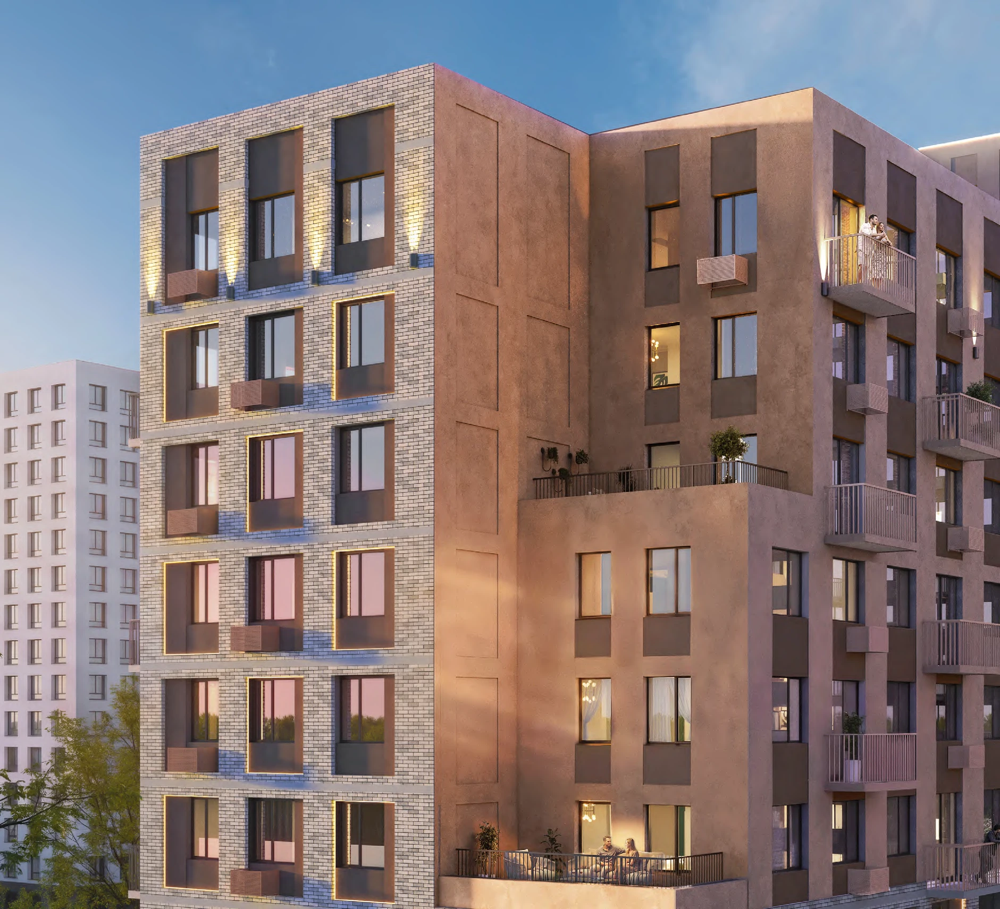
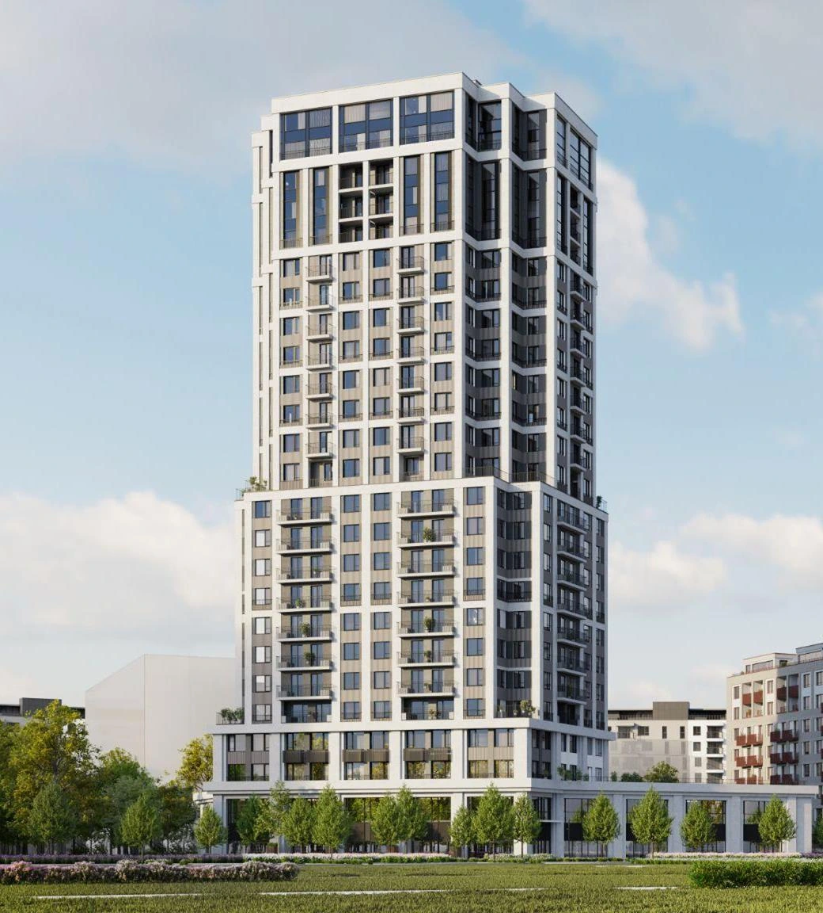
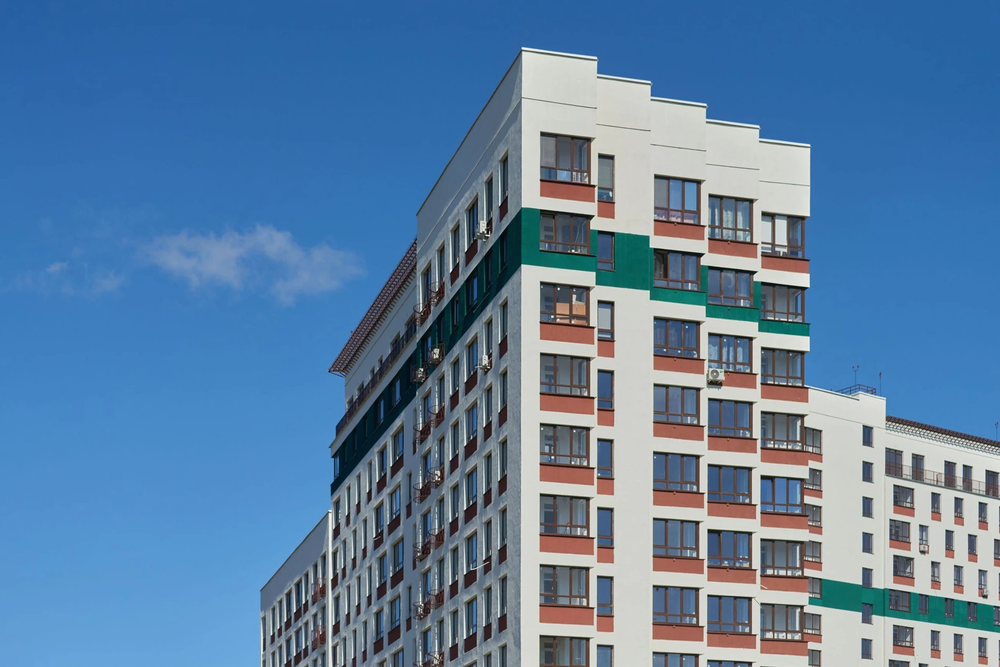
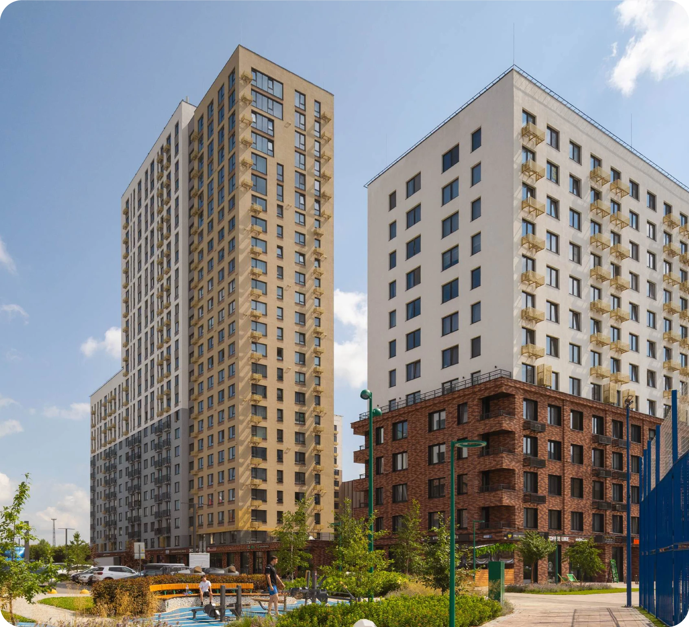
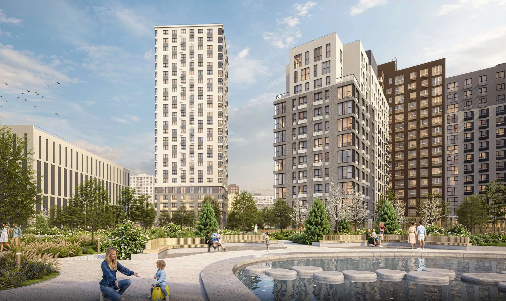

Под ваш ритм жизни
Район, дорога до работы, школы и прогулки — учитываем ежедневную жизнь, а не только планировку.
Помогу найти место, в котором хочется жить.
Подберу новостройку под ваш бюджет, привычки
и планы на будущее.

Александра СеденковаЭКСПЕРТ ПО НЕДВИЖИМОСТИ
Это ваш утренний маршрут, любимый вид из окна и место, где растут дети. Поэтому поиск я начинаю с разговора о вас, а не со списка жилых комплексов.
Я — Александра Седенкова, эксперт по недвижимости. Помогу сравнить новостройки Тюмени и разобраться в деталях, которые важны именно для вашей покупки.
Район, дорога до работы, школы и прогулки — учитываем ежедневную жизнь, а не только планировку.
Обсудим стоимость квартиры, первоначальный взнос и варианты оплаты.
Сравним подходящие проекты, обсудим их особенности и спланируем следующие шаги покупки.
Шесть проектов для знакомства.
Помогу сравнить и выбрать ваш.

Айвазовский City: рендеры ГП-7 и ГП-8, отдельные планировки квартир.
Фото и планировки
Архитектура у воды, дворы, парадные и примеры планировок.
Фото и планировки
Дом 5.1: архитектура, благоустройство и типовые планировки.
Фото и планировки
Архитектура, дворы, интерьеры и примеры планировок.
Фото и планировки
Рендеры, фотографии готовых домов и примеры планировок.
Фото и планировки
Рендеры архитектуры, дворов и холлов, отдельные планировки квартир.
Фото и планировкиНаличие квартир, актуальные цены и сроки сдачи конкретного корпуса уточняются на дату обращения.
ЖК «Сердце Сибири» от «Страна Девелопмент». Архитектура, дворы и варианты планировок — из презентации застройщика.
Обсудить планировкуВ презентации предусмотрены дворы без машин, игровые пространства и зоны отдыха.
Прогулочные маршруты, озеленение и пространства для спорта и встреч.
От студий до семейных квартир. В презентации есть варианты с террасами, гардеробными и мастер-спальнями.
Источник: предоставленная презентация ЖК «Сердце Сибири», «Страна Девелопмент». Визуализации показывают проектные решения; фотографии готовых домов отмечены отдельно. Планировки — примеры из презентации, наличие уточняется индивидуально. Комплектация и характеристики зависят от дома и квартиры. Не является публичной офертой.
ЖК «Август» в Тюменской Слободе, на Обдорской улице. Застройщик — «Свой девелопмент». Рассмотрите архитектуру, дворы и планировки из предоставленной презентации.
Обсудить планировкуВ презентации представлены детские и спортивные площадки, зоны отдыха и пешеходный бульвар.
Сквозные входные группы, вход с уровня земли, колясочные и места для ожидания.
Рассмотрите шесть отдельных планировок квартир. Площади указаны на схемах.
Источник: предоставленная презентация ЖК «Август». Рендеры иллюстрируют проектные решения и варианты интерьеров. Отделка, мебель и комплектация на визуализациях не означают их включение в покупку. Планировки квартир приведены для знакомства; наличие квартир и характеристики уточняются индивидуально. Не является публичной офертой.
Знакомство с домом 5.1 в жилом районе «Зарека». Сдержанная архитектура, скандинавский подход к ландшафту и типовые планировки — из предоставленной презентации.
Обсудить планировкуВ концепции дома 5.1 — строгая геометрия фасадов, ритм окон и выразительные фактуры.
Проектом предусмотрены многоуровневое озеленение, места отдыха и игровые пространства.
Рассмотрите варианты 0С, 1С, 2С и 3С. Обозначения сохранены по презентации дома 5.1.
Источник: предоставленная презентация «Зарека. Дом 5.1». Визуализации отражают проектные решения и варианты интерьеров, а не фотографии готовых объектов. Планировки приведены для знакомства с домом 5.1. Отделка, мебель и комплектация на рендерах не означают их включение в покупку. Наличие квартир и актуальные характеристики уточняются индивидуально. Не является публичной офертой.
ЖК «Европейский берег 2.0» от «Страна Девелопмент» на берегу Туры. Рассмотрите архитектуру, прогулочные пространства и примеры планировок из предоставленной презентации.
Обсудить планировкуВ концепции квартала — набережная, прибрежный сад и бульвар «Всё на пирс» для прогулок и отдыха.
В галерее представлены дома «Канны» и «Хельсинки», дворы, игровые пространства и парадные.
Десять примеров: от студии до семейных квартир, включая варианты с террасой, лоджией и мастер-спальней.
Источник: предоставленная презентация ЖК «Европейский берег 2.0», «Страна Девелопмент». Рендеры отражают проектные решения и варианты интерьеров. Планировки приведены для знакомства, а не как подтверждение наличия квартир. Отделка, мебель и комплектация на визуализациях не означают их включение в покупку. Характеристики конкретного дома и квартиры уточняются индивидуально. Не является публичной офертой.
ЖК «Мириады» от ЭНКО в районе Мыс. Архитектура кварталов, прогулочные пространства и отдельные планировки квартир — из предоставленной презентации.
Обсудить планировкуВ концепции района — кварталы с домами разной высоты, мягкие оттенки фасадов и выразительные детали.
В презентации предусмотрены игровые и спортивные пространства, озеленение и места спокойного отдыха.
Отдельные варианты 1+ и 2+ из презентации. Рассмотрите комнаты, кухню-гостиную и места для хранения.
Источник: предоставленная презентация ЖК «Мириады», ЭНКО. Визуализации иллюстрируют проектные решения и варианты оформления. Показаны отдельные планировки квартир, извлечённые из схем буклета. Обозначения 1+ и 2+ сохранены по источнику. Наличие квартир, актуальные сроки и характеристики уточняются индивидуально. Мебель и оформление на рендерах не означают их включение в покупку. Не является публичной офертой.
ЖК «Айвазовский City» от ЭНКО. Рассмотрите архитектуру ГП-7 и ГП-8 и отдельные планировки квартир из предоставленного буклета.
Обсудить планировкуВ буклете представлены модернизм, интернациональный стиль, чикагская школа, сталинский ампир и эклектика.
На отдельных планировках можно рассмотреть комнаты, кухни-гостиные и лоджии. Обозначения квартир сохранены по буклету.
Показаны отдельные варианты из ГП-7 с площадями и обозначениями 1+ и 2+ — удобно сравнить перед консультацией.
Источник: предоставленный буклет «Айвазовский City. ГП-7, ГП-8», ЭНКО. Визуализации показывают проектные решения. Набережная в буклете указана как проект на стадии предварительного планирования; её концепция и сроки могут измениться. Показаны отдельные планировки квартир, извлечённые из схем буклета. Наличие квартир, характеристики и условия покупки уточняются индивидуально. Не является публичной офертой.
На сайте не весь каталог. Укажите необходимые параметры, мы подберем для вас идеальный вариант!
Ежемесячный платёж
Предварительный расчёт равных ежемесячных платежей. Ставка 20% указана для примера — введите условия вашего банка. Страхование, комиссии и другие расходы не учтены. Расчёт не является предложением банка или одобрением ипотеки.
Вы знаете, что происходит сейчас
и какой шаг будет следующим.
Обсуждаем вашу задачу, пожелания и комфортный бюджет.
Сравниваем проекты, планировки и условия покупки.
Организуем просмотры, уточняем детали и согласуем сопровождение сделки.
Личный опыт тех,
кому я помогла с покупкой.
«Весь процесс прошёл чётко, быстро и максимально комфортно. Всегда на связи, всё понятно, спокойно и без лишнего стресса.»
Хочу выразить огромную благодарность Александре за помощь в покупке квартиры! ❤️
С самого начала всё было организовано на высшем уровне: встретила нас на вокзале, помогла заселиться на сьемное жилье. подобрала множество отличных вариантов квартир для просмотра, помогла сориентироваться и определиться с выбором.
Отдельно хочется отметить профессионализм на встречах с застройщиками. Она активно участвовала в переговорах, задавала очень важные и грамотные вопросы, о многих из которых мы даже не задумывались. Чувствовалось, что человек действительно заинтересован в том, чтобы мы выбрали лучший вариант и учли все нюансы.
Весь процесс прошёл чётко, быстро и максимально комфортно. Всегда на связи, всё понятно, спокойно и без лишнего стресса.
Недавно получили уже ключи от квартиры , Александра так же присутствовала на нашей приемке , вместе с нами проконтролировала весь процесс от и до !
Спасибо за профессионализм, внимательность, заботу и искреннее участие! Очень рады, что доверили такую важную сделку именно вам. Однозначно рекомендуем как грамотного, ответственного и надёжного специалиста! 🌷
«Абсолютно всегда была на связи, подробно отвечала на тысячи моих вопросов, мгновенно всё решала, помогала и поддерживала на всём пути.»
С помощью Александры и её команды стали собственниками недвижимости. Александра-самый ответственный, компетентный, внимательный, понимающий специалист из всех, с кем мне приходилось когда-либо работать. Абсолютно всегда была на связи, подробно отвечала на тысячи моих вопросов, мгновенно всё решала, помогала и поддерживала на всём пути. Спасибо Вам, Александра! Вы очень чуткий человек и прекрасный специалист, успехов Вам и процветания в Вашем деле!
«очень довольна и благодарна Александре за проделанную работу! Буду рекомендовать всем знакомым🙂»
Обратилась к Александре за покупкой квартиры, сначала планировали покупку вторички, но после консультации узнала что подхожу под семейную программу по новостройке, быстро одобрили ипотеку и оформили новостройку с небольшим платежом, очень довольна и благодарна Александре за проделанную работу! Буду рекомендовать всем знакомым🙂
«Подобрать лучший вариант, быстро оформить документы это к Саше!Всем рекомендую!!!»
Александра супер специалист в своей сфере!Помогла мне найти квартиру мечты)очень ей благодарна!!!все быстро, оперативно и доступно!Подобрать лучший вариант, быстро оформить документы это к Саше!Всем рекомендую!!!И наше сотрудничество не заканчивается)все еще впереди)Успехов тебе Саша!!!Побольше таких клиентов как я)))
«Покупали квартиру по доверенности, которую оформили на Александру. Сделка была без нашего присутствия. Все прошло замечательно.»
Хотим выразить огромную благодарность Александре за помощь в покупке нашей новой квартиры. Это был наш первый опыт на рынке недвижимости, и мы очень рады, что обратились именно к этому специалисту. С самого начала Александра проявила себя как настоящий профессионал: внимательно выслушала все наши пожелания, предложила сама несколько вариантов в нужных нам районах и организовала просмотры в кратчайшие сроки. Особенно хочется отметить ее умение вести переговоры. На этапе проверки документов и проведении сделки была нашей главной опорой. Мы чувствовали себя в полной безопасности. Покупали квартиру по доверенности, которую оформили на Александру. Сделка была без нашего присутствия. Все прошло замечательно. Однозначно рекомендуем, лучший риелтор!
Отзывы опубликованы клиентами на странице «Ключи от мечты» в 2ГИС. В карточках показаны цитаты; полный текст раскрывается по кнопке. Имена, оценки и даты сохранены по источнику. Отзывы отражают личный опыт покупателей.
Да. Начнём с ваших возможностей, первоначального взноса и комфортного платежа. Доступные программы и окончательные условия необходимо уточнять в банке.
С разговора о вашем образе жизни: работа, семья, транспорт и инфраструктура. Затем определим районы и подходящие проекты, а также обсудим удобный формат общения.
Да. Сравним расположение, планировки, сроки сдачи, отделку и условия оплаты. Обсудим преимущества и ограничения каждого варианта.
Расскажите мне о квартире, о которой мечтаете.